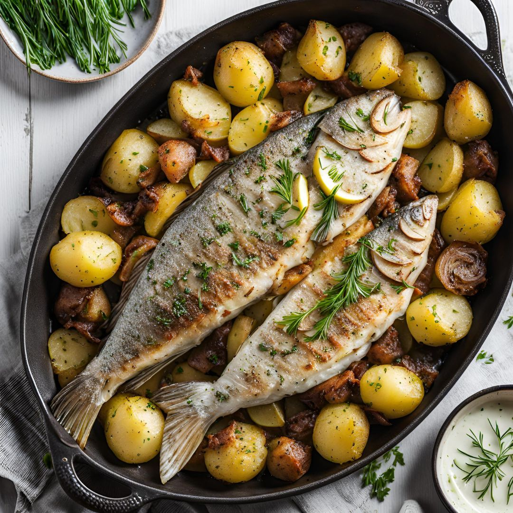

Ideas de comidas saludables
Aquí encontrarás recetas deliciosas y equilibradas para el almuerzo.
Quiche de brócoli
Un plato delicioso y fácil de preparar con un toque de queso.
Ingredientes:
- 1 brócoli pequeño
- 3 huevos
- 200 ml de nata para cocinar
- 100 g de queso rallado
- 1 lámina de masa quebrada
- Sal y pimienta al gusto
Preparación:
- Precalienta el horno a 180°C.
- Cocina el brócoli en agua hirviendo durante 5 minutos y escúrrelo.
- En un bol, bate los huevos con la nata, sal y pimienta.
- Extiende la masa quebrada en un molde y vierte la mezcla anterior.
- Añade el brócoli y el queso rallado.
- Hornea durante 30 minutos hasta que esté dorado.
Pollo al curry
Sabores exóticos y una preparación rápida para una comida deliciosa.
Ingredientes:
- 2 pechugas de pollo
- 1 cebolla
- 200 ml de leche de coco
- 2 cucharadas de curry en polvo
- 1 cucharada de aceite de oliva
- Sal y pimienta al gusto
Preparación:
- Corta el pollo en trozos y sazónalo con sal y pimienta.
- Pica la cebolla y sofríela en una sartén con aceite.
- Añade el pollo y cocina hasta que esté dorado.
- Incorpora el curry y la leche de coco, mezcla bien.
- Cocina a fuego lento durante 15 minutos.
- Sirve caliente acompañado de arroz.
Pescado al horno
Ligero y saludable, perfecto para una comida nutritiva.
Ingredientes:
- 2 filetes de pescado (merluza, dorada, salmón, etc.)
- 2 cucharadas de aceite de oliva
- Jugo de 1 limón
- 1 diente de ajo picado
- Sal y pimienta al gusto
- Hierbas aromáticas (tomillo, orégano, perejil)
Preparación:
- Precalienta el horno a 180°C.
- Coloca los filetes de pescado en una bandeja para hornear.
- Mezcla el aceite de oliva, el ajo, el jugo de limón y las hierbas.
- Unta la mezcla sobre los filetes y sazona con sal y pimienta.
- Hornea durante 15-20 minutos hasta que el pescado esté cocido.
- Sirve caliente con una ensalada fresca o verduras al vapor.
Arroz con verduras
Rápido, colorido y lleno de nutrientes esenciales.
Ingredientes:
- 1 taza de arroz
- 2 tazas de agua
- 1 zanahoria rallada
- 1/2 pimiento rojo picado
- 1/2 calabacín en cubos
- 2 cucharadas de aceite de oliva
- Sal y pimienta al gusto
Preparación:
- Enjuaga el arroz y ponlo a cocer con el agua y una pizca de sal.
- En una sartén, calienta el aceite de oliva y saltea las verduras.
- Cuando el arroz esté cocido, agrégalo a la sartén con las verduras.
- Mezcla bien, ajusta de sal y pimienta, y cocina 2 minutos más.
- Sirve caliente acompañado de una proteína al gusto.
Ternera a la plancha con ensalada
Proteína de calidad con una ensalada fresca y ligera.
Ingredientes:
- 2 filetes de ternera
- 1 cucharada de aceite de oliva
- Sal y pimienta al gusto
- Lechuga, tomate y cebolla para la ensalada
- Aliño de aceite, vinagre y sal
Preparación:
- Sazona los filetes de ternera con sal y pimienta.
- Calienta una sartén con el aceite y cocina la ternera 3-4 minutos por lado.
- Prepara la ensalada con la lechuga, tomate y cebolla.
- Aliña la ensalada y sirve junto a la ternera caliente.
Ensalada de quinoa

Una opción refrescante con muchas vitaminas y minerales.
Ingredientes:
- 1 taza de quinoa
- 2 tazas de agua
- 1/2 pepino en cubos
- 1 tomate picado
- 1/4 de cebolla morada picada
- Jugo de 1 limón
- 2 cucharadas de aceite de oliva
- Sal y pimienta al gusto
Preparación:
- Enjuaga la quinoa y cuécela con las 2 tazas de agua hasta que esté tierna.
- Deja enfriar y mezcla con el pepino, tomate y cebolla.
- Aliña con el jugo de limón, aceite de oliva, sal y pimienta.
- Sirve fría y disfruta.
Crema de calabaza
Cremosa, deliciosa y perfecta para cualquier época del año.
Ingredientes:
- 500 g de calabaza
- 1 zanahoria
- 1 patata pequeña
- 1 cebolla
- 500 ml de caldo de verduras
- 2 cucharadas de aceite de oliva
- Sal y pimienta al gusto
Preparación:
- Pela y corta la calabaza, zanahoria, patata y cebolla en trozos.
- En una olla, calienta el aceite y sofríe la cebolla hasta que esté dorada.
- Añade la calabaza, zanahoria y patata, y cubre con el caldo de verduras.
- Cocina a fuego medio hasta que las verduras estén tiernas.
- Tritura con una batidora hasta obtener una crema suave.
- Sirve caliente con un chorrito de aceite de oliva por encima.